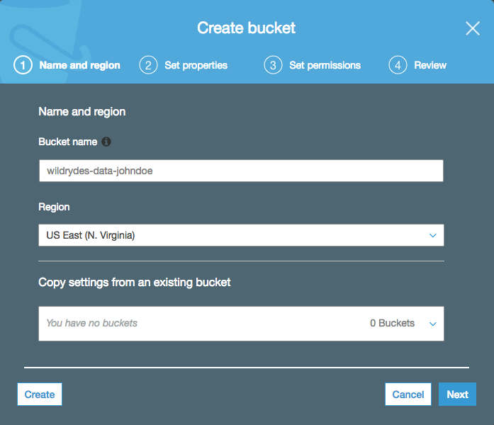
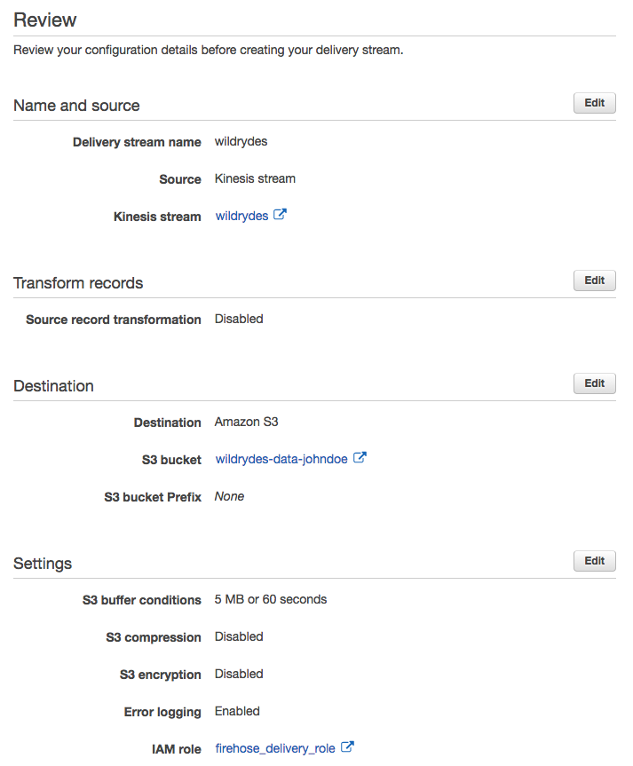
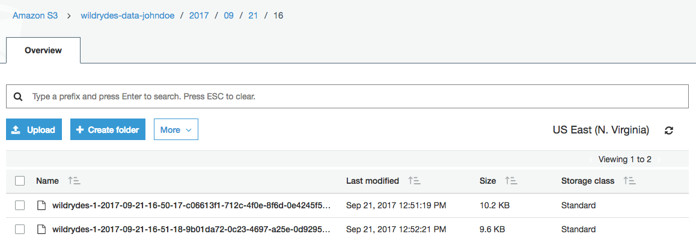
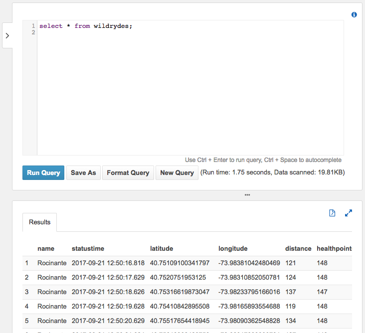

In this module, you’ll create an Amazon Kinesis Data Firehose to deliver data from the Amazon Kinesis stream created in the first module to Amazon Simple Storage Service (Amazon S3) in batches. You’ll then use Amazon Athena to run queries against our raw data in place.
The architecture for this module builds on the Amazon Kinesis stream you created in the first module. You’ll use Amazon Kinesis Data Firehose to batch the data and deliver it to Amazon S3 to archive it. Using Amazon Athena, you’ll run ad-hoc queries against the raw data in the Amazon S3 bucket.
Use the console or CLI to create an S3 bucket. Keep in mind, your bucket’s name must be globally unique. We recommend using a name such as wildrydes-data-yourname.
✅ Step-by-step Instructions
From the AWS Console click Services then select S3 under Storage.
Click + Create bucket
Provide a globally unique name for your bucket such as wildrydes-data-yourname.
Select the region you’ve been using for your bucket.

Click Next twice, and then click Create bucket.
Create an Amazon Kinesis Data Firehose delivery stream named wildrydes that is configured to source data from the wildrydes stream and deliver its contents in batches to the S3 bucket created in the previous section.
✅ Step-by-step Instructions
From the AWS Console click Services then select Kinesis under Analytics.
Click Create delivery stream.
Enter wildrydes into Delivery stream name.
Select Kinesis stream as Source and select wildrydes as the source stream.
Click Next.
Leave Record transformation and Record format conversation disabled and click Next.
Select Amazon S3 from Destination.
Choose the bucket you created in the previous section (i.e. wildrydes-data-johndoe) from S3 bucket.
Click Next.
Enter 60 into Buffer interval under S3 Buffer to set the frequency of S3 deliveries to once per minute.
Scroll down to the bottom of the page and click Create new or Choose from IAM role. In the new tab, click Allow.
Click Next. Review the delivery stream details and click Create delivery stream.

Create an Amazon Athena table to query the raw data in place on Amazon S3 using a JSON SerDe. Name the table wildrydes and include the attributes in the raw data:
✅ Step-by-step Instructions
Click on Services then select Athena in the Analytics section.
If prompted, click Get Started and exit the first-run tutorial by hitting the x in the upper right hand corner of the modal dialog.
Copy and paste the following SQL statement to create the table. Replace the YOUR_BUCKET_NAME_HERE placeholder with your bucket name ( e.g. wildrydes-data-johndoe) in the LOCATION clause:
Click Run Query.
Verify the table wildrydes was created by ensuring it has been added to the list of tables in the left navigation.
Using the AWS Management Console, navigate to the S3 bucket that you used as your Kinesis Data Firehose delivery target. Verify that Firehose is delivering batched data files to the bucket. Download one of the files and open it in a text editor to see the contents.
✅ Step-by-step Instructions
Click on Services then select S3 in the Storage section.
Enter the bucket name you create in the first section in the Search for buckets text input.
Click on the bucket name and navigate through the year, month, day, and hour folders to ensure that files are being populated in your bucket.

Click on one of the files and click Download. Open the file with a text editor and explore its contents.
Query the Amazon Athena table to see all records that have been delivered via Kinesis Data Firehose to S3.
✅ Step-by-step Instructions
Click on Services then select Athena in the Analytics section.
Copy and paste the following SQL query:
Click Run Query.

🔑 Amazon Kinesis Data Firehose is a fully managed service for delivering real-time streaming data to destinations such as Amazon S3. Amazon Athena allows us to run ad-hoc queries against the raw data using standard SQL.
🔧 In this module, you’ve created a Kinesis Data Firehose deliery stream to deliver data from the Kinesis stream to an Amazon S3 bucket. Using Athena, you ran queries against this data on S3.
🎉 You’re finished! You’ve completed the workshop. Thanks so much for participating! Please remember to give us feedback either in person, via GitHub, or through the survey mailed after an event so we can improve the materials.
✅ Have some time? Take a whack at some extra credit tasks.
✅ Be sure to clean up the resources from this workshop to ensure you do not incur any additional costs.